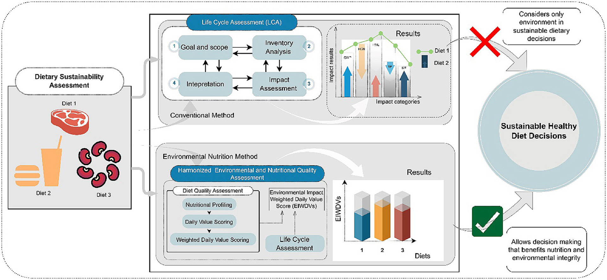
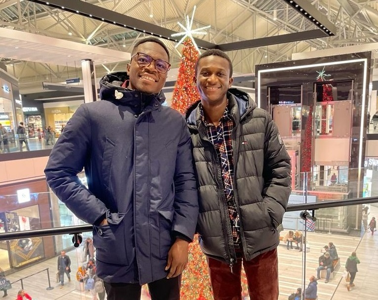
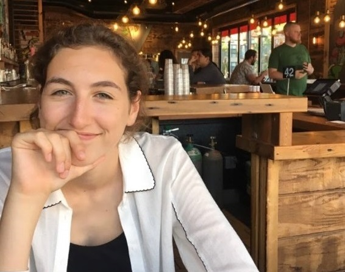
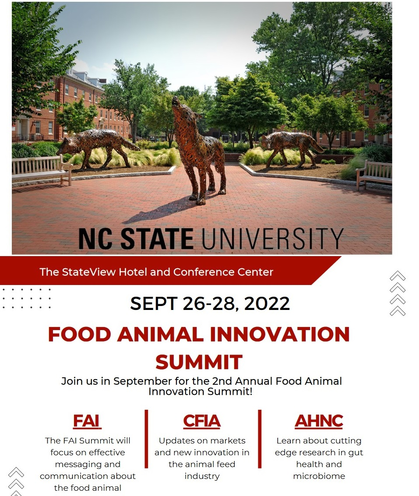

New
Graduate student Presents at the Black African Month program
As part of the celebration and acknowledge of the black the Methodist Church, Montreal invited one of the graduate students of SFSE lab to
to make educate the community on sustainable healthy diets.
Event. Winter Sem
Feb 26, 2023

New
New publication in Journal of Cleaner Production
A new plubication by one of students, Rapheal Aido. The article title "Integrating environmental assessment to nutriton " aima to
support currnt narratives which supports the current narratives of combining nutrition with environmental impact analysis to suppport decision making. The paper was published on
the 2 March,
Publication. Winter Sem
March 02, 2023

New graduate Student joins SFSE lab
On the 2ND of January 2023, SFS Engineering lab welcomed a new PhD student, Mr Vincent Abe-Inge.
Mr. Abe-Inge holds a bachelor and master of Science in Food Science and Technology
New Student. Winter Sem
Jan 02, 2023

Undergraduate BREE student joins SFSE as interns
Undergraduate student, Marie-Anne Dessureault joined the SFSE lab as intern. She will be joining the Sustainable Healthy diet research group of the
SFSE lab. In this, group she will be focused on t
New Student. Winter Sem
March 4, 2023
PI presents at the ANGASABE monthly membership training
As part of ANGASABE, the African version of ASABE efforts to increase membership engagement. Dr Ebenezer Kwofie, the current secretary of the association
was invited to make a presentation one of the projects in SFSE lab.
Event. Fall 2022
May 31, 2020

PI presents at the Food Animal Innovation Summit @ NC State
The Principal Investigator for the SFSE lab was investigated as guest speaker for a three day session at North Carolina State University.
The summit was attended by industry partner and research alike.
Event. Fall 2022
June 16, 2020